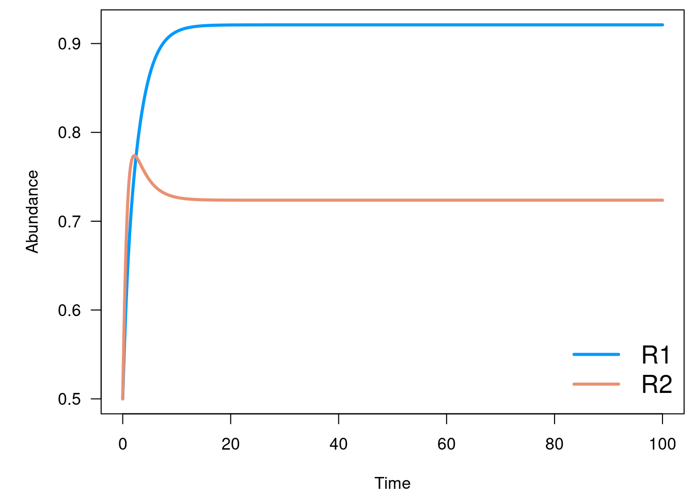
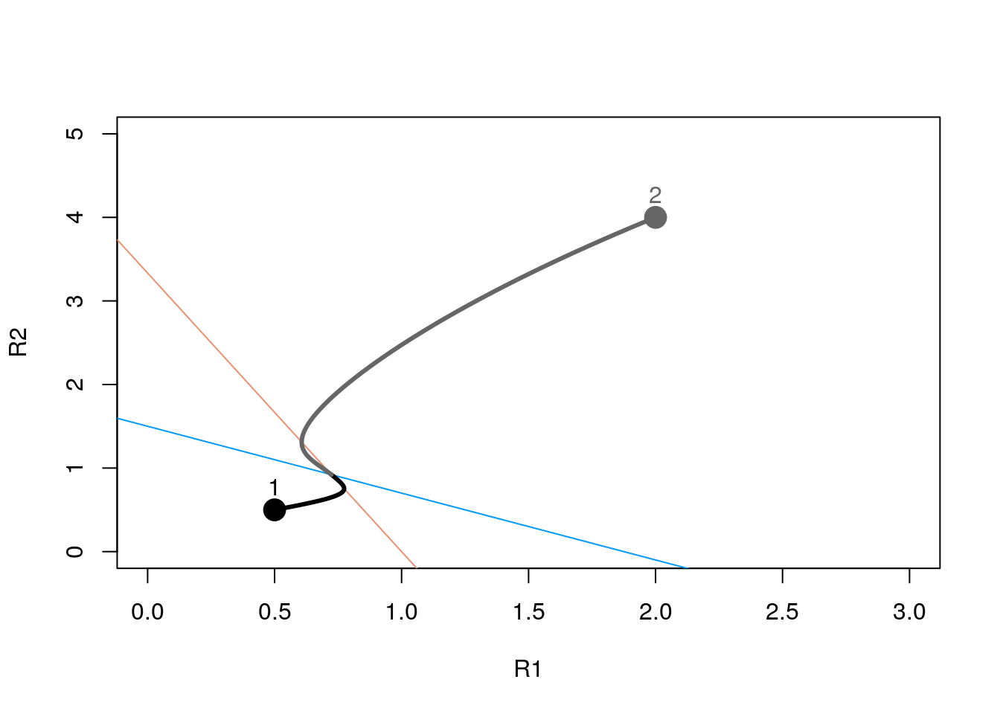

Chapter 3 Introduction to Lotka-Volterra Competition with R
3.1 Solving Differential Equations with R
There are several solvers of differential equation R packages, among those:
Below, we will be using odein :
3.2 Model and Parameters
The model we will use is the classical Lotka-Voltera competition model:
\[ \left\{ \begin{array}{l} \dot{R_1} = r_1R_1*(1 - \frac{R_1+\alpha_{12}R_2}{K1})rR - aCR \\ \dot{R_2} = r_2R_2*(1 - \frac{R_2+\alpha_{21}R_1}{K2})eaCR - mC \end{array} \right. \]
Using odin, here is what to do to create the model
lv_comp <- odin({
## Derivatives
deriv(y1) <- y1 * r1 * (1 - (y1 + alpha12 * y2) / K1)
deriv(y2) <- y2 * r2 * (1 - (y2 + alpha21 * y1) / K2)
## Initial conditions
initial(y1) <- .5
initial(y2) <- .5
## parameters
alpha12 <- 0.8
alpha21 <- 0.3
r1 <- 1.0
r2 <- 2.0
K1 <- 1.5
K2 <- 1.0
})
#> gcc -I"/usr/local/lib/R/include" -DNDEBUG -I/usr/local/include -fpic -g -O2 -fstack-protector-strong -Wformat -Werror=format-security -Wdate-time -D_FORTIFY_SOURCE=2 -g -c odin_adaf3c53.c -o odin_adaf3c53.o
#> gcc -shared -L/usr/local/lib/R/lib -L/usr/local/lib -o odin_adaf3c53.so odin_adaf3c53.o -L/usr/local/lib/R/lib -lRThen lv_comp() creates a solver for the problem described below:
mod <- lv_comp()
mod
#> <odin_model>
#> Public:
#> contents: function ()
#> deriv: function (t, y)
#> initial: function (t)
#> initialize: function (user = NULL, unused_user_action = NULL, use_dde = FALSE)
#> ir: {"version":"1.0.1","config":{"base":"odin","include":[]} ...
#> run: function (t, y = NULL, ..., use_names = TRUE, tcrit = NULL)
#> set_user: function (..., user = list(...), unused_user_action = NULL)
#> transform_variables: function (y)
#> Private:
#> core: list
#> discrete: FALSE
#> dll: odin_adaf3c53
#> init: 0.5 0.5
#> interpolate_t: NULL
#> n_out: 0
#> name: odin
#> output_order: NULL
#> ptr: externalptr
#> update_metadata: function ()
#> use_dde: FALSE
#> user:
#> variable_order: list
#> ynames: t y1 y23.3 Evaluating the model – time series
Then, to solve the problem, one must create a sequence of values and used the run function of the solver:
Let’s do a quick plot
# few tweaks
par(mar = c(4.1, 5.1, 0.5, 0.5), las = 1)
# colors
pal <- c("#009afa", "#e99172")
matplot(y[, 1], y[, -1], xlab = "Time", ylab = "Abundance",
type = "l", col = pal, lty = 1, lwd = 3)
legend("bottomright", c("R1", "R2"), col = pal, lwd = 3, bty = "n", cex = 1.5)
3.4 Equilibria and Isoclines
Skipped! Note that there are ways of obtaining Jacobian in R (see JacobianCpp() in odeintr and the function D() in the package stats that should already be installed), but overall I (Kevin Cazelles) would say that R is not really well-equipped for such tasks and I would use Julia or SageMath rather than R to do symbolic computation (at large).
3.5 Now plot the isoclines
We will again use the manipulate function to see how our parameters change the isoclines. This can immediately tell us a lot about our equilibria and stability.
draw_isocline <- function(mod, pal) {
pr <- mod$contents()
abline(a = pr$K1, b = -pr$alpha12, col = pal[1])
abline(a = pr$K2/pr$alpha21, b = -1/pr$alpha21, col = pal[2])
}Then let’s do the final plot:
R1 = c(0, 3)
R2 = c(0, 5)
plot(R1, R2, type = "n")
draw_isocline(mod, pal)
#
points(.5, .5, pch = 19, cex = 2)
text(.5, .5, "1", pos = 3)
lines(y[,3], y[,2], type = "l", lwd = 3)
# with a different starting point
y2 <- mod$run(t, y = c(4, 2))
points(2, 4, pch = 19, cex = 2, col = "grey40")
text(2, 4, "2", col = "grey40", pos = 3)
lines(y2[,3], y2[,2], type = "l", lwd = 3, col = "grey40")